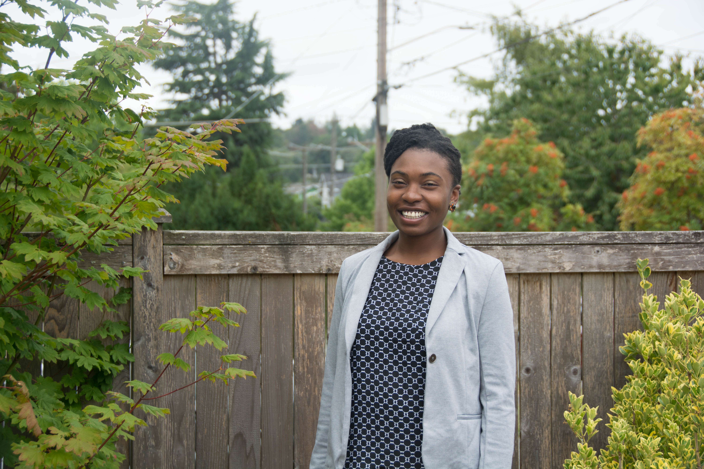

My great-grandfather moved to the Pacific Northwest (PNW) from St. louis? to seek better employment opportunities in the1950's but later his oldest child, my grandmother re-located to where she grew up, St. Louis Missouri.
When she was 15 she had my mother, and when my mother was 15 she had my older sister; I made my debut into this world a few years later, also as a surprise!
My grandmother moved back to Seattle in 70's and my mother followed her not knowing she was carrying a child(me). My mom settled in Seattle working at a pizza parlor then working with a cable company. When I was 10 My mom lost her job of years, and we lost our housing. My siblings and I were in and out of different houses and shelters for 7 years, and I was in and out of different schools while at home I was battling the tears from my mother's domestic abuser.
Around this time, I entered Garfield High School. I was a very quiet student, trying to keep my head down and stay out of the spotlight. After so much trauma and transition in my life, my academic skills were behind. In fact, I was so far behind that I had been placed in the special education track at school.
I decided not to be restricted academically. I advocated for myself to be placed in a general education classroom and to be given a chance to reach my highest potential. I was afforded this opportunity and maintained a 3.5 G.PA and higher in both general and honors classes.
I went on to study at the University of Washington which is one of the top universities in the country.
During the beginning of my Freshmen year in college, my mother had succumbed to her life-threatening injuries from domestic violence. My mother's last words to me was, "don't be like me, be better than me."
I never understood what she meant until I became a young adult.
My mother was trying to express to me that I must take the time to trust the process of life even if I cannot see what is on the "other-side" of my destiny
I want to have access to opportunities to contribute to my community and family in a positive way. This is one of many reasons why I am venturing out and pursuing this opportunity.
If I had allowed societal expectations to determine my life, I would have been another statistic. In honor of my mother and all those who have helped me in my life, I will be the first in my family and community to go into an "uncharted territory".
I am happy and excited to navigate a new course in my life.